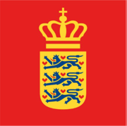
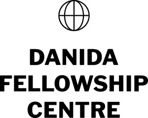

Fully funded opportunities for students from Ethiopia, Uganda and Kenya to study and conduct research at Aarhus University, Denmark.
Three-year programme (2026–2029) with 62 student and staff exchanges funded by Erasmus+.
Learn about the programme → 2027 intake · open nowSix fully funded Master's scholarships at Aarhus University for applicants from Ethiopia, Kenya, and Uganda. Apply by 30 September 2026.
View full call for applications →28 scholarships · 24 months · MSc Animal Science at Aarhus University. Fully funded: tuition, travel, visa, insurance, housing and a living stipend.
25 stays (10 of five months, 15 of three months) at Aarhus University for students currently enrolled at a partner university, on study leave.
Six summer schools, typically one week each, hosted by the partner universities in Denmark and Africa on a rotating basis. Open to students enrolled in the master’s in animal science programmes of the partner universities (including Aarhus University) and other selected applicants, subject to availability of spots. The content of each summer school is set by the ASAP-Bio Joint Academic Board and spans the five ISAPS themes.
| Cohort | New places | Notes |
|---|---|---|
| 2027 | 6 | First cohort; MSc Animal Science open from autumn 2027 |
| 2028 | 7 | 13 students cumulative |
| 2029 | 8 | 21 cumulative; first graduates |
| 2030 | 7 | 28 cumulative, final intake |
A transparent two-step process. Being shortlisted by ASAP-Bio does not guarantee admission, every candidate must also meet Aarhus University's official requirements.
You apply to the ASAP-Bio call. The Joint Academic Board and Admissions Taskforce assess academic strength, relevance of your BSc, ISAPS thematic fit, motivation and gender balance, and produce a shortlist. Shortlisted candidates can receive funded support to take the IELTS test.
Shortlisted candidates submit a full application through Aarhus University's official system (Studieportalen) and are ranked alongside all other applicants. AU Admissions makes the formal admission decision.
Once admitted, ASAP-Bio issues your scholarship agreement and supports the residence-permit, housing and pre-departure process. Studies begin in the autumn.
• National of Ethiopia, Uganda or Kenya
• A relevant Bachelor's degree (animal science, veterinary science, agriculture, biology or related field)
• Not currently enrolled in another full Master's programme
• Able to begin studies in Aarhus in the autumn intake
An accepted English test is required, normally IELTS Academic 6.5 (minimum 6.0 in each component) or equivalent. The test result must be ready in time for the official AU deadline. Funded test support is available to shortlisted candidates.
Calls open ahead of each intake. For questions about the scholarships, contact the coordination office.

